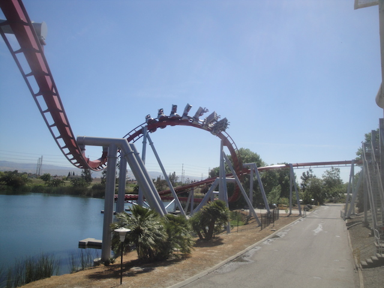
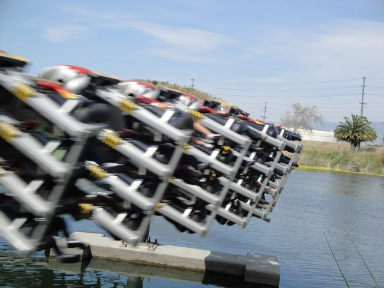
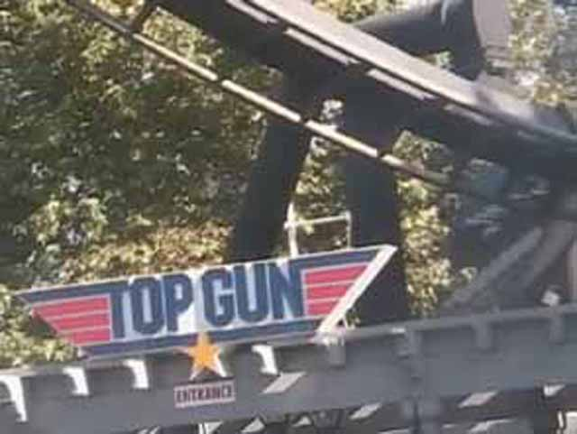

| |
Top Gun Review
We're here at California's Great America to ride Top Gun. After pulling down the shoulder harness, the floor drops and away we go. Up the lifthill we climb. Higher and higher we go. Once we get to the top, we get a lovely view of the Parking Lot. So if it's disgustingly crowded at California's Great America, you'll know it if you're sitting in the front seat. Then it's down the first drop we roar. We gain quite a bit of speed from this drop. Then we fly through a vertical loop. Our asses get tightly glued to the seat as we flip head over heals for the first time on the ride. After that loop, we viciously roar into an upward helix. As we spiral up towards the sky, we feel quite a big smile spread across our faces. Then it's down a small hill. While we get no airtime at all, it still is a fun little dip that provides us with even more speed. Then it's off into the heartline spin. Like most Heartline Spins, we get whipped around in all it's awsomeness. After that beautiful element, we surge through a couple random turns over the station and into a dip where we lead into the finale. Then we fly through a corkscrew. While it's not quite as powerful as on Kumba, it is still a damn strong corkscrew. Then we surge through a helix. While it's not quite the helix of death, it is still really freaking powerful! Not a bit of speed has been lost. Unfortunetly, all that's left is some straight track, a turn, and the brake run. The only problem Top Gun has is that it's too short, but it's still a pretty damn good B&M Invert. It just never gets talked about for some reason. It's one of the best coasters at California's Great America. I would STRONGLY recommend riding Top Gun if you go to California's great America as it's a pretty fun ride alone, and it's one of the better B&M Inverts.
8/10
Location: California's Great America
Opened: 1993
Built by: B&M
Last Ridden: September 22, 2018
Top Gun Photos








Home
|